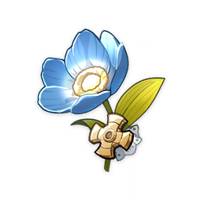
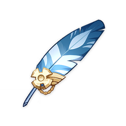
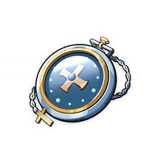
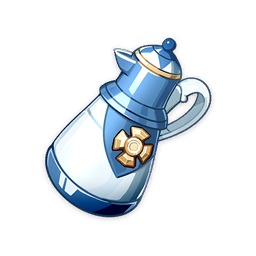
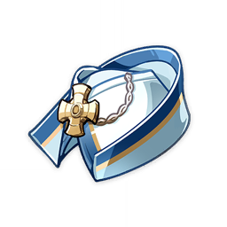

Artifacts
Traveling Doctor
Traveling Doctor
Available in 1★, 2★ and 3★
Bonuses:
2-Piece Set Bonus
Increases incoming healing by 20%.4-Piece Set Bonus
Using Elemental Burst restores 20% HP.Pieces:
Traveling Doctor's Silver Lotus
A precious medicinal ingredient that has lost all medicinal value after years in storage.

Traveling Doctor's Owl Feather
The durable feather of an owl. Emblematic of nocturnal supremacy, it gave some encouragement to the Traveling Doctor when venturing out to visit patients late at night.

Traveling Doctor's Pocket Watch
A precise instrument used for keeping time. For a doctor, every second counts.

Traveling Doctor's Medicine Pot
This pot used to carry concentrated and extremely potent concoctions. It is now empty, but still gives off a strong smell of medicine.

Traveling Doctor's Handkerchief
Used to tie back the doctor's hair when treating patients. Can also be used as a sling for sprains and broken arms in emergencies.